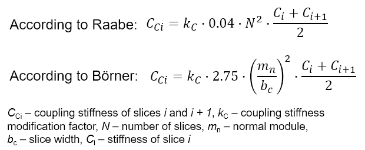

|
|
|


计算
接触刚度计算方法：此处您可以选择由 Weber/Banaschek [21] 定义的计算方法（动态刚度分析：默认设置）、ISO 6336-1 方法 B 中定义的方法或"自定义输入"。
轮齿固定位置：依据 Weber/Banaschek [21] 的接触分析基于具有任意形状的弯曲梁模型。此设置定义了确定弯曲梁/轮齿固定位置的方法。您可以选择依据 Weber/Banaschek [21] 或依据 Langheinrich [22] 的方法。
单齿接触刚度：如果已选择作为接触刚度计算方法，您可以输入单齿接触刚度的自定义值。
耦合刚度修正系数：该系数可以根据 Raabe 或 Börner [36] 定义，参见下一图。

图 15.100：依据 Raabe 或 Börner 的耦合刚度修正系数
边缘弱化系数：用于斜齿轮轮齿边缘刚度弱化的边缘弱化系数。
赫兹刚度修正系数（依据 Winter）：用于赫兹压扁的修正系数，如 Winter/Podlesnik [37] 进行的实验所述。
幅值谱中的阶数（传动误差/接触刚度）：在此输入要计算的阶数。至少必须计算一个阶数，并且计算时使用的啮合位置数不得超过其一半（请在选项卡中设置此值）。
按 ISO/TS 6336-22 摩擦系数计算的闪温和微点蚀：这将覆盖选项卡中定义的摩擦系数，代之以依据 ISO/TS 6336-22 计算的摩擦系数。
插值齿顶圆角引起的应力增加：在存在齿顶圆角的情况下，齿形的计算会导致曲率半径的突然变化。这反过来会在接触分析计算的该过渡点处产生应力增加。因此，您可以指定是使用数学解进行计算，还是对该应力增加进行插值。
计算力激励：力激励（依据 FVA Report 487）由轮齿刚度和平均传动误差产生。与计算传动误差的过程相比，计算激励力能够更好地评估不同轮齿变体如何产生噪声。这是因为齿轮的啮合力（而非齿轮的均衡运动，即传动误差）是产生噪声的决定性因素。
锥形变位：选择此选项可在选项卡中启用锥形变位。
考虑塑性变形：使用此设置指定是否在接触分析中考虑塑性变形。如果考虑塑性，则使用弹性接触理论计算的最大接触应力将根据指定的"最大允许齿面压力"降低。如果超过最大弹性齿面压力，则局部改变接触体的半径，使得到的弹性接触应力与此最大值匹配。仅使用新半径的一定百分比，具体依据指定的"塑性变形权重"。
平滑迭代磨损计算：如果选择此选项，则在磨损计算的每次迭代后都会对齿形进行平滑处理。
Calculation
Calculation method contact stiffness: Here you can select either the calculation method defined by Weber/Banaschek [21] (dynamic stiffness analysis: default setting), the method defined in ISO 6336-1 Method B and "Own input".
Fixing position of the tooth: The contact analysis according to Weber/Banaschek [21] is based on a bending beam model with a random form. This setting defines the method for determining the fixing position of the bending beam/tooth. You can select the methods according to Weber/Banaschek [21] or according to Langheinrich [22].
Single contact stiffness: If has been selected as the contact stiffness calculation method, you can enter your own value for the single contact stiffness.
Coupling stiffness modification factor: The factor can be defined according to Raabe or Börner [36], see the next figure.
Figure 15.100: Coupling stiffness modification factor according to Raabe or Börner
Border weakening factor: Border weakening factor for a weakening of stiffness on the edge of helical gear teeth.
Correction factor for Hertzian stiffness (according to Winter): Correction factor for Hertzian flattening as described in the experiments performed by Winter/Podlesnik [37].
Number of orders in the amplitude spectrum (transmission error/contact stiffness): This is where you enter the number of orders to be calculated. At least one order must be calculated, and the calculation must be performed with no more than half the number of meshing positions (set this value in the tab).
Flash temperature and micropitting with coefficient of friction according to ISO/TS 6336-22: This overwrites the coefficients of friction defined in the tab with a coefficient of friction sized according to ISO/TS 6336-22.
Interpolate stress increase caused by tip rounding: In the case of a tip rounding, the calculation of the tooth form results in a sudden change in the radii of curvature. This in turn results in stress increases at this transition point in the contact analysis calculation. For this reason, you can specify whether the mathematical solution is to be used, to perform the calculation, or whether this stress increase is to be interpolated.
Calculate force excitation: Force excitation (according to FVA Report 487) results from toothing stiffness and the average transmission error. In contrast to the process for calculating transmission error, calculating the excitation force enables a better evaluation of how different toothing variants generate noise. This is because the gear meshing forces, not the equalizing movement (transmission error), of the gears, are the decisive factor in generating noise.
Conical profile shift: Select this option to enable the conical profile shift in the tab.
Take into account plastic deformation: Use this setting to specify whether plastic deformation is to be taken into account in the contact analysis. If plasticity is to be taken into account, the maximum contact stress, calculated using the elastic contact theory, is reduced on the basis of the specified "Maximum permitted flank pressure". If the maximum elastic flank pressure is exceeded, the radii of the contact body are changed locally so that the resulting elastic i.e. contact stress matches this maximum value. Only a percentage rate of the new radii is used, on the basis of the specified "Weighting of the plastic deformation".
Smooth iterative wear calculation: If you select this option, the tooth form is smoothed after every iteration of the wear calculation.